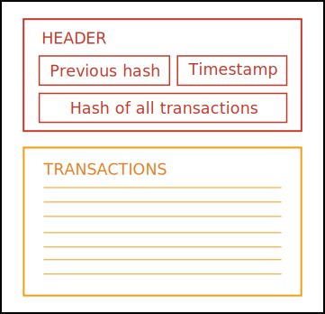
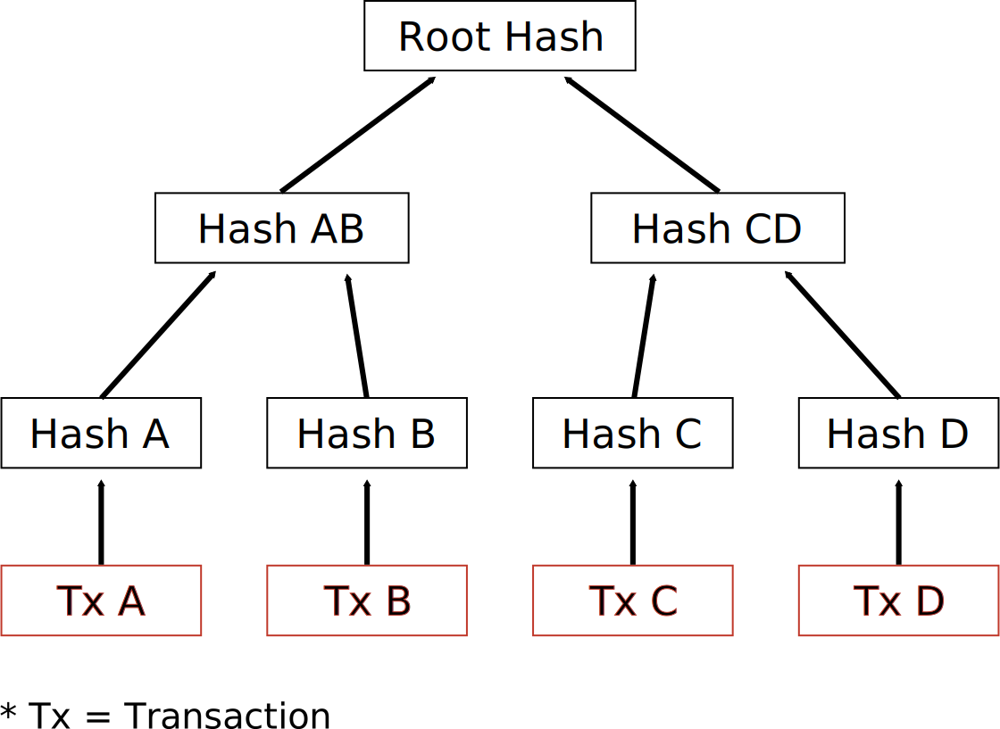
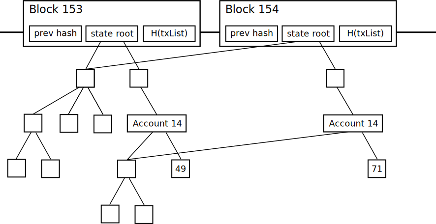

G Roques
May 9th 2017
Traditional centralized approaches to IoT suffer from inherent weaknesses like single points of failure and high costs. We examine blockchains as a possible, more decentralized solution. We discuss five main challenges IoT faces with traditional approaches and how the blockchain circumvents these. After that we provide a broad overview of what the blockchain is, how it works, and introduce Ethereum—a blockchain platform for building decentralized applications. We then give three examples demonstrating the combination of blockchain and IoT. Next we examine two key blockchain challenges and how Ethereum plans to overcome them. We conclude blockchain is a promising technology for IoT, but needs further development to be a practical solution.
Internet of Things, IoT, blockchain, peer to peer distributed networks, Bitcoin, Ethereum, Dapps, decentralized applications, smart contracts
Business Insider projects the number of IoT devices will more than triple over the next five years [Newman17]. The Internet of Things (IoT) will impact lives to an ever-greater degree as more and more devices gain connectivity. From people’s homes, cars, hospitals, and even bodies—IoT creates endless possibilities.
Fulfilling this vision demands overcoming many challenges. These challenges stem from the centralized nature of traditional client-server models. IoT needs a more decentralized approach, namely the blockchain.
In 2008 a mysterious whitepaper titled “Bitcoin: A Peer-to-Peer Electronic Cash System” emerges on the Internet. The anonymous author introduces the blockchain, a public ledger, to solve the double spending problem. For the first time in history, electronic payments were possible without a trusted intermediary.
Years later in 2014, Vitalik Buterin proposes a new platform called Ethereum. Like Bitcoin, Ethereum utilizes a blockchain and has cryptocurrency. Unlike Bitcoin, Ethereum features a Turing-complete programming language. This makes Ethereum versatile and capable of applications beyond the scope of money. Versatility, among other properties we explore later, make Ethereum a promising solution for IoT.
The success of Bitcoin’s underlying blockchain technology has generated much interest over the years. Not only from the public, but from industry leaders like IBM, Samsung, and Microsoft. Figure 1 displays interest in blockchain over the last five years and evidences this growing trend.
Figure 1: GoogleTrends for the term “blockchain” over the past five years
Source: https://trends.google.com/trends/explore?q=blockchain
But why the hype? What makes blockchain so interesting? This paper aims to explore these questions in the following sections. Section II discusses the challenges stemming from centralization and makes the case for the blockchain. Section III describes what the blockchain is, how it works, and the Ethereum platform. Section IV discusses three blockchain applications relating to IoT. Section V examines the challenges blockchains face, and how Ethereum plans to overcome them. Finally, we conclude in Section VI.
The client-server model reigns supreme among application architectures today. Therefore, many IoT applications use this existing paradigm. In a client-server model, multiple clients talk to one centralized server. This develops mega-monopolies like Amazon, Google, and Facebook. In addition to creating monopolies, central servers create single points of failure, and easy targets for censorship. The blockchain circumvents these issues with decentralized Peer-to-Peer networking. In a Peer-to-Peer network, computers connect directly and share resources. No need for a central server.
In addition to the problems stated above, we can identify five main challenges relating specifically to IoT:
Each of these challenges stem from centralization, and could be solved by either Peer-to-Peer networks or blockchains.
Typical infrastructure handling IoT today requires expensive networking equipment and vast server farms. An ever-increasing number of devices from 6.6 billion in 2016 to 22.5 billion in 2021 leads to an unsustainable model [Newman17]. Infrastructure to analyze, process, and store massive amounts of data further increase costs.
Maintenance costs are also high. Think about software updates. Devices like LED light bulbs and cars can last for years if not decades. Many companies fail to meet revenue targets and must continue providing software updates for fear of losing their user base [Brody14]. Either companies pay the price of maintaining server infrastructure for updates, or devices become obsolete. Both situations are not ideal.
In contrast, decentralized networks and blockchains offer very low costs. Instead of paying for a central point, peers in the network provide the necessary computation, networking, and storage resources. Providing software updates only requires broadcasting the update to neighboring peers, which in turn broadcast to their neighboring peers, and so on, until the update propagates across the network.
In addition to high costs, centralized networks struggle with security. Many IoT applications rely on one centralized cloud server containing a list of every registered device. Companies must protect against man-in-the-middle attacks and device spoofing. Hackers intercept information sent between a device and server with man-in-the-middle attacks. Then they use that information to impersonate a device and gain entrance to a network.
Every device in a network presents an opportunity for a hacker. Numerous examples in the media exist: from remote controlling jeeps, to changing a sniper’s target, and even altering a patient’s dose in a hospital [Osborne15][Greenberg15][Kovacs15]. IoT networks only remain as secure as the least secure device. In other words, a hacker only needs to find the weakest link.
While decentralized networks also struggle with security, blockchains offer a unique solution through asymmetric cryptography and consensus algorithms. We discuss asymmetric cryptography and consensus algorithms more in Section III.
Privacy remains a big issue with centralized networks. Centralized cloud servers store massive amounts of data generated by devices. Hackers target these giant data stores to gain access to sensitive and private information. Privacy grows more concerning depending on the type of application. For example, applications relating to health care must abide by various laws and regulations like HIPPA to ensure privacy. Similarly, PCI compliance aims to secure applications dealing with payments and credit card information.
Many people rightfully distrust “phone-home” techniques for software updates. Earlier in 2017, Vizio agreed to pay $2.2 million dollars to settle charges related to the collection of user data from smart TVs [Maheshwari17]. Vizio gave no notice of the collection or tracking, and was selling the data to third parties. A decentralized approach would prevent this scenario.
As stated earlier, the blockchain is a public ledger. Meaning data on the blockchain is available to anyone. Therefore, privacy remains a challenge for blockchains. However, solutions exist and will be discussed in Section V.
The IoT ecosystem hosts a slew of different manufacturers, operating systems, versions, and communication protocols. This fragmentation leads to poor interoperability between devices. Large companies must agree upon open standards to remedy this problem. Fear of losing their competitive advantage makes some hesitant to do so. On the contrary, public and open blockchains offer a common platform for devices and developers.
More and more devices generating more and more data creates large amounts of traffic. Annual data generation for any given device will increase from 145 zeta-bytes in 2015 to 600 zeta-bytes by 2020. [Cisco16]. This growing traffic presents a problem for centralized cloud infrastructure on two fronts: (1) some applications require low end-to-end latency, and (2) centralized systems have a single point of failure.
IoT applications requiring low end-to-end latency include augmented reality, speech recognition, computer vision, machine learning, and decision making. Creating a network capable of supporting these applications is critical.
As previously mentioned, centralized networks have single points of failure. Single points of failure cause more concern as human life and health depend more upon IoT. Ensuring the robustness of critical devices like wireless enabled pacemakers will be paramount for IoT’s success [Booth16].
In contrast, decentralized peer-to-peer networks and blockchains have no single point of failure. But heavy traffic strains a network regardless of architecture. How blockchains plan to deal with this will be discussed in Section V.
The blockchain is a distributed immutable ledger first conceptualized by the inventor of Bitcoin to solve the double spending problem. A problem with digital cash where people can spend money multiple times. Companies like PayPal solve this problem by recording transactions in a centralized database. PayPal serves as a trusted intermediary, and its ledger a source of truth.
Blockchain similarly enables the transfer of digital cash, but cuts out middle-men like PayPal. The blockchain stores all transactions, rather than a centralized database. The blockchain is distributed, meaning each member of the network stores a complete copy of it. But why is it called a blockchain?
Think of the blockchain as a log of records, where records are batched into timestamped blocks. A unique hash identifies each block, and each block references the hash of the previous block. This establishes a chain of blocks, or blockchain [Christidis16]. Now we know where the name comes from, but what is a block?
Figure 2: The two parts of a block
Adapted from: https://www.youtube.com/watch?v=PGTzuDG5jEA&t=547s
Figure 2 illustrates the two parts of a block: (1) the header and (2) the body. The block header contains important meta information like a timestamp when the block was created, the hash of the previous block, and a hash of all the transactions. Hashing this information together creates a unique identifier for the block. The body of the block simply consists of raw transaction data. The exact contents of a block depend upon implementation, but those are the core components. We stated earlier blockchains are immutable. Meaning they cannot change and are tamper-proof. Understanding how blockchains store transactions illuminates their tamper-proof nature.
Each block stores transactions in a data structure known as a Merkle tree. Hashes of each transaction make up the leaf nodes of the tree. Hashing the concatenation of these hashes creates the next level of the tree. This hashing process continues upward eventually forming a root hash. The root hash acts a “digital fingerpint” allowing nodes to quickly verify transactions and detect tampering. In other words, every non-leaf node contains the hash of its children. If someone were to add, delete, or modify a transaction, the root hash would change. Figure 3 illustrates the simplest Merkle tree, a binary Merkle tree.
Figure 3: A binary merkle tree of transactions
Adapted from: https://chrispacia.wordpress.com/2013/09/02/bitcoin-mining-explained-like-youre-five-part-2-mechanics/
To better understand how blockchains work, we must first understand more about asymmetric cryptography. Asymmetric cryptography, also known as public key encryption, uses pairs of public and private keys to encrypt and decrypt data [Rouse16]. A public key addresses each member of the network, and members sign all transactions with a corresponding private key. Once signed, members broadcast transactions to neighboring peers in the network. Peers ensure the validity of transactions before further broadcast, discarding any invalid transactions. A transaction propagates across the network until all nodes validate it.
At a certain time, a node in the network packs up valid transactions into a timestamped block. This node then broadcasts the block back to the network. If valid, peers add the block to their chain. This process repeats for all transactions.
The node which creates the block depends upon the consensus algorithm. The consensus algorithm determines how the network agrees upon the state of the world and settles disputes. Bitcoin uses a consensus algorithm known as Proof-of-Work (PoW). Creating blocks through PoW is called mining. Mining involves a node solving a computationally expensive puzzle. The miner who solves the puzzle first creates the block and receives a reward of Bitcoins. Mining keeps the network secure.
Ethereum also uses PoW, but will eventually switch to a less computationally expensive algorithm called Proof-of-Stake (PoS) [Zamfir15][CryptoCompare17]. Creating blocks through PoS might be called virtual mining [GitHub17a]. For more information about PoS, see Buterin “On Stake” [Buterin14a].
In addition to PoW and PoS, many other “proof-of-XXX” algorithms exist. Tschorsch and Scheuermann provide a good overview in “Bitcoin and Beyond: A Technical Survey on Decentralized Digital Currencies” [Tschorsch16]. Like many consensus algorithms exist, many blockchains exist with varying attributes.
Three taxonomies help in classifying blockchains: public, private, and consortium. The difference between these taxonomies lies within the answers to the following questions:
We will begin our discussion with public blockchains, as they first came into existence.
Public blockchains allow anyone to read, write, and verify transactions. Every node verifying each transaction keeps public-chains extremely secure, but at the cost of speed. No single entity owns or controls public blockchains. The public provides all the infrastructure; therefore, costs remain low. We can consider public blockchains fully decentralized, thus benefit from network effects.
Private blockchains restrict write permissions to one entity. Private blockchains may restrict read permissions to a varying degree depending upon the application. The ability to restrict read permissions grants more privacy than public blockchains. One entity owns and controls the blockchain, thus rules and transactions can easily change when desired. Costs depend upon implementation and tend to be higher than pubic counterparts. Only a few nodes verify each transaction, making transactions cheaper and faster compared to public blockchains. We can consider private blockchains fully centralized, thus not able to benefit from network effects.
Consortium blockchains are like a hybrid between public and private blockchains. Like private blockchains, read permissions may be public or restricted to a varying degree. Write permissions are restricted, but may be open to a subset of the public. A pre-determined group of nodes verify transactions [Thompson16]. Rather than one entity or the public, consortium blockchains operate under the control and guidance of a group. Consortium blockchains offer the same speed and privacy of private blockchains. We can consider consortium blockchains partially decentralized.
This paper focuses on public over private and consortium blockchains because of network effects like greater interoperability and lower costs [Jentzsch17]. Anyone can create an application on public blockchains with permissions built in from the start. This means anyone can interface, integrate, and build on top of pre-existing applications. In addition to greater interoperability, public blockchains also provide lower costs. One can deploy their application to the “blockchain cloud” where other public members provide the necessary computation, storage, and networking resources. Countless public blockchain implementations exist, but this paper focuses on Ethereum.
Ethereum grew out of Vitalik Buterin’s frustration with using Bitcoin for “more than just money” [Buterin14b]. Buterin worked closely with several projects, each suffering from the same problem—a fragmented ecosystem.
Ethereum is Buterin’s attempt to create a common platform for those projects to build on. Ethereum shares many features with Bitcoin, with one key difference. Ethereum features a Turing complete programming language. Turing-complete meaning programmers can compute anything that is computable. These programs are called smart-contracts. Smart-contracts live on the blockchain and govern the rules of interaction and exchange.
Ethereum offers three programming languages to create smart-contracts with [EthDocs17]:
Offering familiar languages reduces the learning curve for new developers. Applications written with smart-contracts are called decentralized applications, or Dapps. Smart-contracts make up the “backend” logic of a Dapp. For the “frontend”, a developer uses standard technologies like HTML, CSS, and JavaScript. Traditional web apps require server side code, whereas Dapps require smart-contract code. To browse and interact with Dapps, people download a special browser called Mist. Soon browser extensions will allow people to access Dapps in standard browsers like Chrome and FireFox [MetaMask17].
In addition to smart-contracts, Ethereum introduces two more technologies: Swarm for decentralized storage and Whisper for decentralized messaging [Gerring14]. Swarm allows for storage of static assets like frontend code, images, and video. While Whisper lets Dapps communicate with each other. Together these three technologies fulfill Ethereum’s vision as a “world computer”.
IBM states “to perform the functions of traditional IoT solutions without a centralized broker, any decentralized approach must support three foundational functions:” [Pureswaran15]
Ethereum supports each foundational function making a wide variety of IoT applications possible.
We now shift our focus to three IoT applications utilizing the Ethereum blockchain. The first two applications, a semi-autonomous washing machine, and smart-locks or “slocks,” have real world implementations. The third example, supply chains, serves to exemplify the potential of blockchains.
IBM states as IoT scales decentralized networks have the potential to reduce infrastructure and maintenance costs removing single points of failure that could exist in traditional centralized networks [Pureswaran15]. As a proof-of-concept, IBM and Samsung created a semi-autonomous washing machine. The washing machine could download its own software updates, order detergent when it was low, order servicing and replacement parts, and negotiate energy usage among neighboring devices. All while keeping the owner informed by broadcasting to his or her mobile device. This application demonstrates the power of automation through secure machine-to-machine payments.
Slock.it introduces another interesting blockchain application for IoT with the idea of smart-locks. Many people today have a lot of property that goes unused most of the time. Some of these items includes cars, bikes, washing machines, and houses. Slock.it allows people to easily sell, rent, and share their property, turning underutilized property into revenue generating assets [Jentzsch15]. Services like Airbnb already allow people to rent out their house, but for smaller things like renting out a bike, many people may not bother with the hassle. With Slock.it you can lock your bike in a public area with a “slock” or smart-lock. When someone wants to rent it out they pay a deposit, then get their deposit back, minus the cost to rent, when they’re done using it. A smart-contract defines both the deposit and cost to rent.
Slock.it demonstrates the power of the blockchain to unlock the sharing economy.An economy characterized by people owning less, and sharing more. With a finite resource planet, sharing will become more important over time.
Blockchains also have the power to revolutionize our supply chains. IBM illustrates this example in an interactive web demo [IBM17]. Imagine shipping frozen cherries to a grocery store. To start each carrier in the supply chain agrees to a smart-contract that if the frozen cherries exceed 32° F, then the carrier will be held responsible for any losses.
First, a factory packages the frozen cherries equipped with a temperature sensor. The temperature sensor stores data locally, transmitting data to the blockchain at each exchange. The factory then ships the frozen cherries across the ocean. The exchange and initial temperature is recorded in the blockchain. During shipment, the temperate remains below 32°. The ship then arrives at land and transfers the frozen cherries to a truck. Again, the temperature and exchange is recorded in the blockchain.
During shipment, the truck’s cooling equipment malfunctions and the temperature of the cherries exceeds 32° F. This flags the grocery store to inspect the cherries upon arrival. The grocery store finds the cherries are ruined and charges the trucking company for all losses.
Instead of having separate records, each member of the supply chain has a single source of truth, the blockchain. This makes handling disputes and determining provenance easy. Like the semi-autonomous washing machine, this process could be automated with machine-to-machine communication at each exchange. Easily determining provenance, or source of origin, brings transparency and trust to the marketplace. With a blockchain, a consumer can easily verify a product is organic, sustainably-harvested, hand-crafted, etc. [Baker15]. For these reasons, blockchains make sense for supply chains.
This section discusses the challenges systemic to all public blockchains. Private and consortium blockchains do not share these same challenges, and will not be discussed. We examine how Ethereum plans to overcome these challenges, as it is the major public blockchain player.
For blockchain to become a viable solution for IoT it must overcome two main challenges: (1) scalability and (2) privacy. We can further divide scalability into two sub-challenges: processing power and storage. We begin our examination with processing power.
Mainstream centralized payment processors like Visa average 2,000 transactions per second (tps) [Visa17]. Up to 56,000 tps during busy times [Visa15]. On the other hand, Bitcoin handles 7 tps while confirming transactions takes 10 minutes or more [Croman16]. Ethereum struggles with similar rates, but remains ambitious. With future releases of Ethereum, Vitalik Buterin aims to compete with Visa on nothing but consumer laptops [Buterin16a]. Examining two of Ethereum’s approaches to scalability illuminates Buterin’s bold claims. Two main ideas exist: sharding and state-channels
Currently every node on the network must validate each transaction. Sharding proposes only a subset of nodes validate each transaction [GitHub17b]. Sharding works by dividing Ethereum’s blockchain state into shards. Each shard contains various accounts, applications, and transactions. Accounts and applications live in one shard, but can talk to other shards when necessary. The protocol then assigns a randomly selected subset of nodes to validate all the transactions for a given shard.
State channels, or off-chain networks, increases processing power by moving state-altering interactions between two participants off the chain. Jeff Coleman describes how state-channels work in three basic steps [Coleman15]:
The idea behind state-channels comes from Bitcoin’s lightning network. A solution for “lightning-fast” payments on the Bitcoin network [LightningNetwork17]. The Raiden Network implements the same idea for Ethereum. As state-channels scale linearly with the number of participants, the Raiden Network claims to support up to 1,000,000 tps [RaidenNetwork17]. In addition to increasing the number of transactions per second, state-channels also increase privacy because off-chain transactions are not recorded in the public ledger.
As blockchains scale, storage presents another big problem. Keep in mind, each full-node in the network must contain an entire copy of the blockchain. The blockchain grows quite large as it contains a record of all the transactions on the network. As of April 2017, the bitcoin blockchain requires 112 GB of storage space and grows by about 5 MB per hour [Blockchain17]. If Bitcoin were to process 2,000 tps, then the blockchain would grow by several tera-bytes per year. If the blockchain were to grow to a large number like 100 TB, then only large businesses would run full-nodes posing a centralization risk [GitHub17c]. Two possible solutions to reduce storage exist: state-tree pruning and blockchain rent.
To understand state-tree pruning, we first need to better understand how Ethereum stores data in the blockchain. Every block contains the “state root”. A hash of a special Merkle tree that stores the entire state of the system: all account balances, smart-contract code, etc [Buterin15]. Blocks differ little between state changes. Therefore, to save space state trees use references to data that remains the same between state transitions.
Figure 4: A state transition between two blocks
Adapted from: https://blog.ethereum.org/2015/06/26/state-tree-pruning/
Figure 4 shows account 14’s balance increase from 49 to 71 between two blocks. Block 154’s state tree contains references to the previous state tree when unchanged. State tree pruning mandates a counter keeps track of the number of references to each node in the tree. When the number of references to a node reaches zero, we sentence the node to “death row”. If nothing references that node again within a certain number of blocks, we delete the node from the database. This way we only store nodes part of the current state and recent history, but not history older than a certain number of blocks. This approach resembles garbage collection in programming languages and tree-based version control systems like Git.
Another approach to reducing storage is blockchain rent. Currently users pay a one-time blockchain storage fee, with a one-time refund for clearing that storage. Blockchain rent proposes to charge users for storage over time. When an account’s balance reaches zero and can no longer afford rent, the account is deleted. This solves the problem of “dust”. Dust is the accumulation of accounts with near zero balance not worth the transaction fee to send. Some estimate “dust” makes up most of the Bitcoin blockchain [Buterin14c]. While blockchain rent solves the problem of “dust,” some warn of possible dangers of deleting smart-contracts [Borah15].
Like programs today, smart-contracts will depend on other smart-contracts in the form of “libraries” [SolidityDocs17]. For example, a smart-contract might rely on another smart-contract for some tiny utility function. Some of these dependency contracts may be forgotten about over time causing active smart-contracts to fail. Due to this concern, a concept of reviving deleted contracts was introduced [Buterin16b]. Suppose the transaction that deletes the smart-contract generates a receipt in that block. Then anyone could “resurrect” the contract by providing the necessary data and an appropriate fee [Buterin16b]. State-tree pruning and blockchain rent are only two ideas to reduce the size of the blockchain. Many more ideas exist as Ethereum Improvement Proposals on GitHub [GitHub17d].
In addition to scalability, privacy is the other big issue with public blockchains. Every device signs each transaction with their public key, which exists in the open blockchain. One can analyze this data, identify patterns, and create connections between public keys to make informed inferences about their actual identities [Christidis16]. Two solutions are ring signatures and zk-SNARKs.
Ring signatures grant users anonymity with respect to a group. The transaction, sender and recipient addresses remain public, but the group obscures the link between them. This gives users plausible deniability. Plausible deniability means no one can definitively link a user to a given address or transaction. To create a ring signature, a group of block chain users come together and each sign a “ring” with their public key. Ring signatures can only be “completed” or verified correct by some secret information, usually the user’s private key [Mercer16a]. The contract that “mixes” the users’ public keys together and creates the ring signature can be called the mixing contract.
There is also an upgraded version of a ring signature called a linkable ring signature. Linkable ring signatures have the additional property of allowing a blockchain user to create a tag that allows third parties to “complete” the ring. The tag links back to the original public key, but ensures the identity remains unknown with respect to the group public keys. Figure 5 demonstrates a linkable ring signature in a mixing contract. Rebekah Mercer discusses ring signatures in greater detail in “Privacy on the Blockchain: Unique Ring Signatures” and at Nicolas Courtois’ cryptography blog [Mercer16a][Mercer16b].
Figure 5: A linkable ring signature
Adapted from: http://blog.bettercrypto.com/?p=3227
A Zero-Knowledge Succinct Non-interactive ARgument of Knowledge or zk-SNARK, proves some fact without revealing any information. zk-SNARKs are succinct meaning the proof is short and quick to verify. For example, a zk-SNARK would allow a person to prove to a hospital they have appropriate medical coverage without revealing any insurance information. A protocol named Zcash uses zk-SNARKs to allow miners to verify encrypted transactions, without revealing the transaction amount, sender or recipient addresses.
Zcash solves the problem of putting private data on public blockchains. While quick to verify, zk-SNARKs take several minutes to produce and are computationally expensive [Ben-Sasson15]. Reducing this time requires more research.
A final point about privacy is the blockchain is not meant for general data storage. This is the role of technologies like Swarm or IPFS [IPFS17]. If data needs to be private, then combine the blockchain with existing solutions like encryption and private databases. For example, storing the address of an encrypted file on the blockchain ensures only select people could view the file’s contents. Alternatively, storing references to data in private databases is appropriate in sensitive contexts like health care.
IoT’s future success depends upon examining traditional approaches. The blockchain poses as a possible alternative by providing greater decentralization, lower costs, enhanced security, a common open-source platform, and robust network. While the blockchain was created for the purposes of Bitcoin, it is now being adapted for new and exciting platforms like Ethereum.
Ethereum ambitiously plans to become a “world computer” creating a myriad of possibilities. These possibilities include applications for IoT like smart-locks, more autonomous machines, and enhanced supply chains. These applications have profound implications for the economy. Smart-locks will usher in the “sharing economy”. More autonomous machines will produce an “economy of things”. Supply chains will have greater transparency and less friction.
However, the blockchain is still a young technology with many problems that need solving. Problems that seem surmountable. Ethereum is hard at work with promising, yet un-proven solutions. Industry interest will create more private and consortium blockchains, while Ethereum leads the way for public chains. Future IoT networks need greater decentralization and we’re only beginning to understand the blockchain’s capability. Only time will tell if blockchain is the answer.